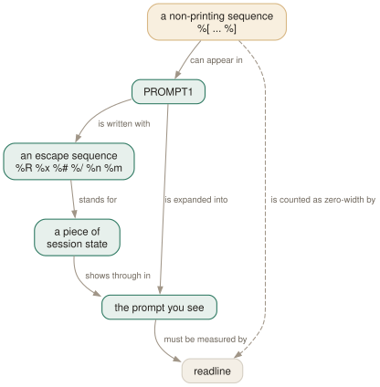

Day 15
Prompts worth reading
The prompt is a projection of session state — keep the escapes that carry something you would act on.
By the end of today you can
- write a prompt that tells you which server and database you are about to change
- colour it without breaking line editing on long statements
- align continuation lines by making the second prompt invisible
The default prompt is already three sensors
The default PROMPT1 is '%/%R%x%# ', and every one of those four escapes is carrying information you would act on. Before designing your own, it is worth knowing what you would be throwing away — because almost everybody who writes a custom psql prompt drops %x, and %x is the valuable one.
The prompt is a projection of session state. That is the test for every escape: does it tell you something that changes what you would type next?
%R- the parse state. In
PROMPT1it is=normally,@in an inactive\ifbranch,^in single-line mode,!when disconnected. InPROMPT2it says why psql wants more:-,',",$,(or*. %x- the transaction state. Empty outside a block,
*inside one,!once a statement in it has failed,?when psql cannot tell. %##if the session user is a superuser,>otherwise. It tracks the session user, soSET SESSION AUTHORIZATIONchanges it.%/- the current database.
%~is the same but prints~when the database is your default one — the one named after your user.

%[ ... %] gets counted as visible characters and line editing goes wrong on exactly the long statements you most need to edit.Where you are, which is the other half
The default prompt tells you the database and nothing about the server, which is fine until you have four terminals open. Four escapes fix that:
%n- the session user name
%M- the full host name, or
[local]over a Unix socket %m- the host name truncated at the first dot —
127.0.0.1becomes127 %>- the port
testdb=# \set PROMPT1 'M=%M|m=%m|port=%> '
M=127.0.0.1|m=127|port=55432
So %n@%m:%> is “who and where” in nine characters. There are three more of this kind and none of them is worth prompt space: %s (the service name, empty unless you connected with service=), %p (the backend PID — real information, but you will reach for \conninfo when you want it) and %P (pipeline status, for tomorrow's lesson).
Two escapes exist for building things rather than reading them. %:name: inserts the value of a psql variable, and %`command` inserts the output of a shell command — which is evaluated every time the prompt is drawn, so it wants to be something very cheap or nothing at all. %l is the line number inside the current statement, which is genuinely useful in PROMPT2 for a long INSERT, and %% is a literal percent sign.
Colour, and the one rule about it
Terminal control sequences go in the prompt like any other text, and every one of them must be wrapped in %[ and %]. The reason is readline: to edit a line it has to know where that line starts, and it works that out by counting the prompt's characters. An unwrapped %033[1;32m is seven invisible characters that readline counts as seven visible ones, and its idea of the cursor column is then wrong by seven for the rest of the session.
The manual page's own example, and then a more useful one:
-- the manual page's: bold yellow on black
\set PROMPT1 '%[%033[1;33;40m%]%n@%/%R%[%033[0m%]%# '
-- who and where, dim; the database, bold; then the three state characters
\set PROMPT1 '%[%033[2m%]%n@%m:%>%[%033[0m%] %[%033[1m%]%/%[%033[0m%]%R%x%# '
postgres@127:55432 testdb=# BEGIN;
BEGIN
postgres@127:55432 testdb=*# SELECT nosuch;
ERROR: column "nosuch" does not exist
postgres@127:55432 testdb=!# ROLLBACK;
An invisible second prompt
PROMPT2 has the same default as PROMPT1, so a multi-line statement is shown against a prompt of a similar width but different content, and the SQL does not line up. %w solves it exactly: whitespace as wide as the most recent PROMPT1, so there is no second prompt at all and the statement aligns under itself.
longprompt=> SELECT
1;
It measures the visible width, which is the second reason to wrap your colour sequences properly — with %[ ... %] in place, %w lines up correctly under a coloured prompt.
What you lose is %R's diagnosis of why psql wants more input, which was the most useful thing on Day 1. A reasonable compromise is '%w' for alignment while you are learning nothing new, or '%R %w' if you would rather keep the character and shift the text by two columns. Both are defensible; the default is not, because it looks like a prompt and tells you almost nothing.
Today's habit
Put the two lines in your psqlrc and then leave the colours alone for a week. The point of the exercise is not the palette — it is that you can no longer run a DELETE without the host, the database, the transaction state and your superuser status all being on the screen in front of you.
Tomorrow: the protocol underneath all of this, and the seven commands that let you drive it by hand.
New vocabulary
Options
| Option | Does |
|---|---|
PROMPT1 | The prompt for a new statement. Default '%/%R%x%# '. |
PROMPT2 | Shown while a statement is unfinished. Same default as PROMPT1. |
PROMPT3 | Shown during COPY ... FROM STDIN. Default '>> '. |
%R | = ready, - unterminated, ' open string, @ inactive branch, ^ single-line, ! disconnected. |
%x | Transaction: empty, * in a block, ! failed block, ? no connection. |
%# | # for a superuser, > for everyone else. |
%/ %~ | The database name; %~ prints ~ when it is your default database. |
%n %M %m %> | Session user; full host; host to the first dot; port. |
%[ ... %] | Wrap non-printing characters so readline can measure the prompt. |
%w | Whitespace as wide as the last PROMPT1 — an invisible second prompt. |
Today's configappend to ~/.psqlrc
Who and where, then what. The dim user@host:port is there so that no DELETE ever goes to the wrong server unnoticed; the bold database name is what you glance at; and %R%x%# keeps everything the default prompt was telling you — whether psql wants more input, whether a transaction is open or broken, and whether you are a superuser. Every escape sequence is wrapped in %[ ... %] so readline can still measure the line. PROMPT2 is %w: invisible, exactly as wide as PROMPT1, so multi-line statements line up under themselves.
\set PROMPT1 '%[%033[2m%]%n@%m:%>%[%033[0m%] %[%033[1m%]%/%[%033[0m%]%R%x%# '
\set PROMPT2 '%w'
psql reads this once at start-up, after connecting. Re-read it in place with \i ~/.psqlrc.
Drillsdo these in a real terminal, today
Self-check
Answer out loud first, then unfold.
You add a colour prompt and line editing goes wrong: C-a puts the cursor in the middle of a word, and long statements redraw over themselves. Nothing is wrong with the colours. What is missing?
%[ and %] around the escape sequences. Readline has to know how wide the prompt is in order to work out where the line it is editing begins, and it does that by counting the characters it was given. An unwrapped \033[1;32m is seven invisible characters that readline counts as seven visible ones, so its idea of the cursor column is permanently off by seven.
Wrapping them in %[ ... %] marks them non-printing. Multiple pairs are allowed, which is what you need for a prompt that colours two things differently. This is also why %w works correctly with a colour prompt: psql knows which characters were visible.
Which escapes are worth keeping, and why is %x the one to fight for?
The three in the default — %R, %x, %# — plus enough of %n, %m, %> and %/ to identify where you are. Everything else is decoration: %p (backend PID) and %l (line number) are real information you will never act on at a prompt.
%x is the one people delete when they write their own prompt, and it is the one that costs them. It is the only continuous indication that a transaction is open, or that it has failed and every statement since has been quietly refused. Day 8's COMMIT that answers ROLLBACK is entirely avoidable, and %x is how.
A colleague's prompt says ~=> and yours says postgres=# on the same server. Two differences. What are they?
They are using %~ rather than %/, and it prints ~ when the current database is your default one — that is, the database whose name matches your user name. Connected to anything else it prints the name, exactly like %/.
And %# is > for them and # for you, so you are connected as a superuser and they are not. Both characters are worth a glance before anything destructive — and note that %# tracks the session user, so it can change under you after a SET SESSION AUTHORIZATION.
What is PROMPT3 for, and when did you last see it?
It is the prompt psql shows while you are typing data rows into a COPY ... FROM STDIN, and its default is '>> '. You saw it on Day 9, when you loaded two rows inline and ended them with a line containing \..
It is the only one of the three where %R produces nothing at all, because there is no parse state to report — psql is not reading a statement, it is reading data. Which is a reasonable argument for leaving it alone: a distinctive >> is exactly the reminder that what you type next is not SQL.
Cheat sheet
Every escape sequence must be wrapped in %[ ... %] or readline miscounts the line.
\set PROMPT1 '%[%033[2m%]%n@%m:%>%[%033[0m%] %[%033[1m%]%/%[%033[0m%]%R%x%# '
\set PROMPT2 '%w' -- invisible, exactly as wide as PROMPT1
default PROMPT1 and PROMPT2 are '%/%R%x%# ' ; PROMPT3 is '>> ' (COPY FROM STDIN)
-- state, and the reason to have a prompt at all:
%R = ready | - unterminated | ' " $ ( * open ... | @ inactive \if | ^ -S | ! disconnected
%x (empty) none | * in a transaction | ! FAILED transaction | ? no connection
%# # superuser | > everyone else <- glance before every DELETE
-- place:
%/ database %~ database, or ~ if it is your default %n user
%M full host %m host to the first dot %> port %s service %p backend PID
-- building blocks: %:var: %`cmd` (run EVERY redraw) %l line no. %P pipeline %% literal
Everything through Day 15
Keys
| Key | Does |
|---|---|
| C-c | Abandon the line you are typing and empty the query buffer. |
| C-d | End the session — but only when the buffer is empty. |
| Tab | Complete a keyword or an object name. Twice for a menu, depending on the library. |
| UpC-p | The previous line from the history. |
| C-r | Reverse incremental search through the history. The one worth learning today. |
Commands
| Command | Does |
|---|---|
psql | Connect with the defaults and start an interactive session. |
; | Dispatch the buffer. Not a meta-command — SQL's own statement terminator. |
\g | Dispatch the buffer, exactly as a semicolon does. |
\p | Print the buffer without sending it. \print in full. |
\r | Reset: throw the buffer away. \reset in full. |
\e | Edit the buffer in $EDITOR; on exit it is re-parsed and run. |
\w file | Write the buffer to a file instead of sending it. |
\; | Append a semicolon to the buffer without dispatching it. |
\? | Every meta-command, in twelve groups. 121 of them in 18.6. |
\h SELECT | Syntax for one SQL command. \h alone lists what it knows. |
\q | Quit. |
\c dbname | Reconnect to another database, reusing host, port and user. |
\c - user | Reconnect as another user. A dash means “leave that one as it is”. |
\c -reuse-previous=on ... | Merge a conninfo string onto the current parameters. |
\conninfo | A twelve-row table describing the live connection. |
\password | Change a password without it reaching your history or the server log. |
\encoding | Show the client encoding, or set it. |
\d | Bare: tables, views, materialized views, sequences and foreign tables. |
\d my_table | Describe one relation: columns, types, nullability, defaults, indexes, constraints. |
\d+ my_table | Adds storage, compression, stats target and per-column comments. |
\dt | Tables. The letters combine — \dti lists tables and indexes. |
\di \dv \dm \ds \dE | Indexes, views, materialized views, sequences, foreign tables. |
\dn | Schemas. \dn+ adds permissions and comments. |
\l | Databases, with owner, encoding, locale provider and privileges. |
\dP | Partitioned tables and indexes; add n to include non-root ones. |
\dx | Installed extensions; \dx+ lists everything each one owns. |
\df pattern | Functions, with result type, argument types and kind. |
\df pattern t1 t2 | Extra arguments are type patterns, matched positionally. |
\sf name | The function's source as CREATE OR REPLACE. \sf+ numbers the body. |
\sv name | The same for a view. \ev and \ef edit rather than show. |
\du | Roles and their attributes. \dg is the same command. |
\drg | Role grants: who is a member of what, with ADMIN/INHERIT/SET. |
\dp | Access privileges on tables, views and sequences. \z is the same command. |
\ddp | Default privileges — what future objects will be created with. |
\dconfig | Server parameters set to non-default values. \dconfig * for all of them. |
\drds | Settings attached to a role, a database, or the pair. |
\dT \do \da | Types, operators and aggregates — same grammar, rarer questions. |
\pset | With no argument, print all 22 printing options and their current values. |
\x | Toggle expanded mode. \x auto is the setting worth keeping. |
\a \t \f \C \H | Shortcuts kept for compatibility: format, tuples_only, fieldsep, title, HTML. |
\set | With no argument, list every variable currently set, with its value. |
\set NAME value | Set a psql variable. Several values are concatenated. |
\unset NAME | Delete it — or, for a control variable, restore its default. |
\echo :NAME | Read a variable back. The cheapest debugging tool psql has. |
\i ~/.psqlrc | Re-read the startup file without restarting. Tilde expansion works. |
\e | Edit the buffer — or a file, or the last query — optionally at a line number. |
\ef name | Fetch a function's definition into your editor. \ev for a view. |
\s file | Print the command history, or write it to a file. |
\errverbose | Repeat the last error at maximum verbosity, changing no settings. |
\timing on | Report how long each statement took. Milliseconds, then m:ss past a second. |
\copy tbl FROM 'file' | Client-side load. psql reads the file, as you, with no server privileges. |
\copy (query) TO 'file' | Client-side export. A table name, or a query in parentheses. |
\copy tbl FROM PROGRAM 'cmd' | Run a command on the client and load its output. TO PROGRAM pipes out. |
\copy tbl FROM stdin | Data rows follow, up to a line containing only \.. |
\copy ... TO pstdout | psql's real stdout, ignoring \o. pstdin is the input twin. |
\copy ... FROM 'f' WHERE cond | Filter rows as they load — the condition is evaluated server-side. |
COPY ... TO STDOUT then \g f | The multi-line, interpolating alternative to \copy. |
\o file | Point all future query output at a file. Bare \o restores stdout. |
\o |command | Pipe all future query output to a shell command. |
\g file | This one query's output to a file. \g |cmd pipes it instead. |
\g (opt=val ...) | A one-shot \pset for this query only. |
\qecho text | Write to the query-output channel, so it lands in the same file. |
\warn text | Write to standard error, so it never lands in the file. |
\w file | Write the query buffer — not its output — to a file. |
\lo_import file | Store a file as a large object. Also \lo_export, \lo_list, \lo_unlink. |
\i file | Read and execute a file. The path is relative to the current directory. |
\ir file | The same, resolved relative to the directory of the including script. |
\! command | Run a shell command. With no argument, a sub-shell until you exit it. |
:name | Substitute the value literally — unquoted, unchecked, unsafe. |
:'name' | Substitute as a properly quoted SQL literal. Handles embedded quotes. |
:"name" | Substitute as a properly quoted SQL identifier. Handles spaces and case. |
:{?name} | TRUE or FALSE depending on whether the variable exists. |
`command` | Substitute a shell command's output, trailing newline removed. |
\gset [prefix] | Store a one-row result into variables named after its columns. |
\getenv var ENVVAR | Read an environment variable into a psql variable. |
\setenv NAME value | Set an environment variable for psql and anything it runs. |
\prompt [text] name | Ask the operator for a value and store it. |
\gexec | Run the buffer, then execute every cell of the result as SQL. |
\gdesc | Report the result's column names and types without running it. |
\crosstabview colV colH colD | Pivot the result into a grid. Two columns become the axes. |
\watch i=N c=N m=N | Re-run the buffer every N seconds, at most N times, while it returns N rows. |
\if expression | Open a block. The expression is interpolated, then read as a Boolean. |
\elif expression | Another arm. Not evaluated at all once an earlier arm has matched. |
\else | At most one, and last before the \endif. |
\endif | Close the block. Must be in the same source file as its \if. |
Options
| Option | Does |
|---|---|
-h -p -U -d | Host, port, user, database. -d also takes a whole conninfo string. |
-w -W | Never prompt for a password / always prompt. Both persist across \c. |
-l | List databases and exit. Connects to postgres unless told otherwise. |
PGHOST PGPORT PGUSER PGDATABASE | libpq's defaults for the four parameters. |
PGPASSFILE | The password file. Default ~/.pgpass, and it must be mode 0600. |
PGSERVICEFILE | Named connection recipes. Default ~/.pg_service.conf. |
S | Include system objects: \dtS. Supplying any pattern does this too. |
+ | More columns — and a size lookup per relation, so it is not free. |
x | Expanded output for this listing only. Goes after S or +, never straight after \d. |
a n p t w | Function-kind filters for \df: aggregate, normal, procedure, trigger, window. |
format | aligned (default), wrapped, unaligned, csv, html, asciidoc, latex, troff-ms. |
expanded | on / off (default) / auto — vertical records, always or only when too wide. |
null | What to print for NULL. Default is nothing, which reads exactly like an empty string. |
border | 0 none, 1 dividing lines (default), 2 a full frame. |
linestyle | ascii (default) or unicode. Aligned and wrapped only. |
footer | The (n rows) line. off removes it. |
columns | Target width for wrapped, and the threshold for expanded auto. 0 means use $COLUMNS. |
pager | off / on (default, meaning “only when it does not fit”) / always. |
xheader_width | full (default) / column / page / an integer — how long the record rule may be. |
-X | Skip both startup files. Every script should pass this. |
PSQLRC | Where the personal startup file lives. Overrides ~/.psqlrc. |
PGSYSCONFDIR | Where the system-wide psqlrc is looked for. |
QUIET | Suppress psql's informational chatter. The startup file's bookends. |
VERSION_NAME SERVER_VERSION_NUM | psql's version and the server's, as a string and a number. |
HISTFILE | Where history is kept. Default ~/.psql_history. Must be set in psqlrc. |
HISTSIZE | How many commands to keep. Default 500; a negative value means no limit. |
HISTCONTROL | ignorespace / ignoredups / ignoreboth / none (default). |
COMP_KEYWORD_CASE | Casing for completed keywords. Default preserve-upper. |
PSQL_EDITOR EDITOR VISUAL | Checked in that order. vi if none of them is set. |
PSQL_EDITOR_LINENUMBER_ARG | How a line number is passed. Default +, which suits vi and emacs. |
AUTOCOMMIT | On by default: every statement commits itself unless you opened a block. |
ON_ERROR_ROLLBACK | off (default) / interactive / on — implicit per-statement savepoints. |
ON_ERROR_STOP | Stop at the first error instead of carrying on. Exit code 3 in a script. |
VERBOSITY | default / verbose / terse / sqlstate. |
SHOW_CONTEXT | never / errors (default) / always — the CONTEXT field. |
ERROR SQLSTATE ROW_COUNT | Set after every statement: did it fail, with what code, how many rows. |
LAST_ERROR_MESSAGE LAST_ERROR_SQLSTATE | The most recent failure, still there after later successes. |
-o file | Send all query output to a file, decided at start-up. |
-L file | Log each query and its output to a file, as well as to the normal destination. |
tuples_only | Data only — no header, no footer, no title. -t on the command line. |
fieldsep recordsep csv_fieldsep | Separators for unaligned and CSV output; -F, -R, -z, -0. |
-c command | Run one command and exit. Repeatable, and mixable with -f. |
-f file | Read commands from a file. Repeatable, and gives errors a file and line number. |
-X | Skip the startup files. Every script wants this. |
-q | No banner, no informational chatter. Same as QUIET. |
-v NAME=value | Set a variable from the command line. The value is not interpolated. |
-1 | Wrap everything the -c and -f options do in one transaction. |
ECHO | none (default) / queries (-e) / all (-a) / errors (-b). |
-s -S | Single-step: confirm each statement. Single-line: a newline terminates one. |
SHOW_ALL_RESULTS | Show every result of a \;-combined query, not just the last. Default on. |
SHELL_ERROR SHELL_EXIT_CODE | Whether the last shell command failed, and its exit status. |
WATCH_INTERVAL | Default seconds between \watch runs. Default 2; an explicit interval wins. |
PSQL_WATCH_PAGER | A pager for \watch only. Unset by default, because ordinary pagers cannot cope. |
PROMPT1 | The prompt for a new statement. Default '%/%R%x%# '. |
PROMPT2 | Shown while a statement is unfinished. Same default as PROMPT1. |
PROMPT3 | Shown during COPY ... FROM STDIN. Default '>> '. |
%R | = ready, - unterminated, ' open string, @ inactive branch, ^ single-line, ! disconnected. |
%x | Transaction: empty, * in a block, ! failed block, ? no connection. |
%# | # for a superuser, > for everyone else. |
%/ %~ | The database name; %~ prints ~ when it is your default database. |
%n %M %m %> | Session user; full host; host to the first dot; port. |
%[ ... %] | Wrap non-printing characters so readline can measure the prompt. |
%w | Whitespace as wide as the last PROMPT1 — an invisible second prompt. |